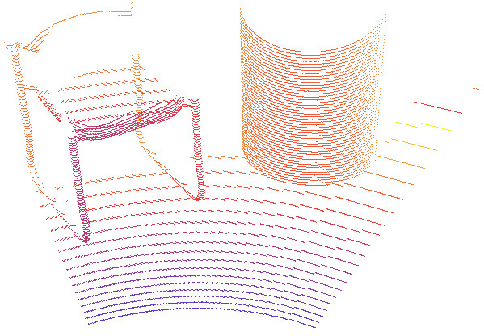
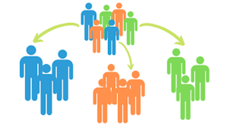
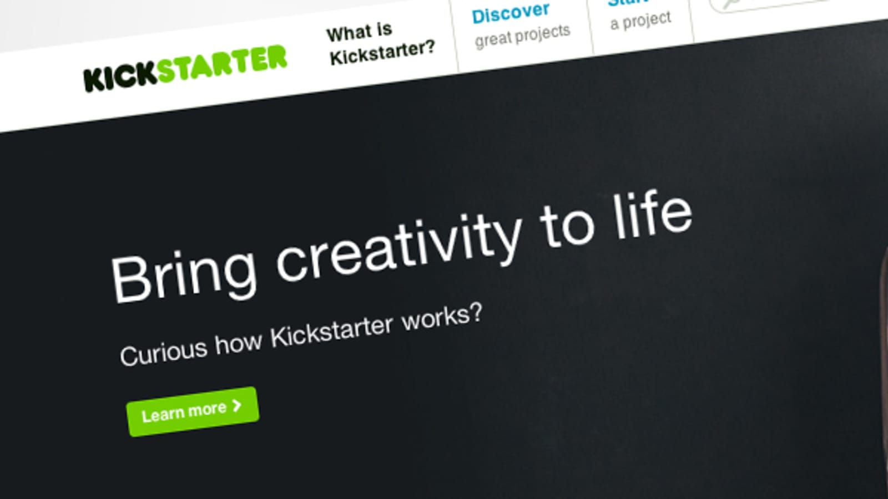
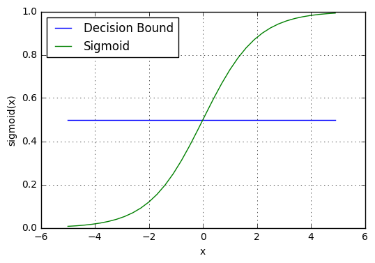
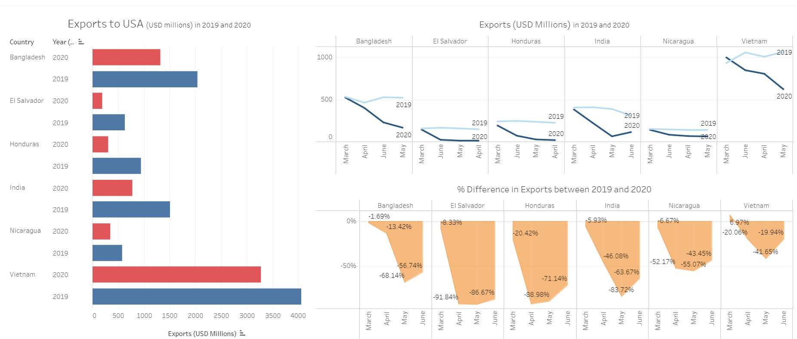
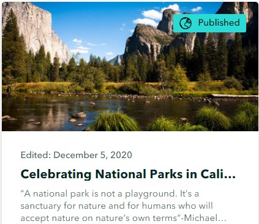

ABOUT ME
Hi, my name is Sainath Reddy Vuppaluru and I am currently pursuing Master's in Data analytics at San Jose State University.
I am very adept in programming and database management particularly focused on data preprocessing, data transformation, building Machine learning & Deep learning models using python,
database designing and writing complex SQL queries. During my master’s program, I have attained vast knowledge and skills in Statistics, Probability, Machine learning, Deep learning
& Data visualization courses and applied those concepts in my projects to gain hands-on experience. Also, my experience in term projects attained an extensive
range of responsibilities including data processing, feature selection, fine-tuning of models, and deployment of models.
Mar - Apr 2021
Object Classification using point cloud (LiDAR) data

Deep learning model for multiclass object detection and acheived 80% accuracy by applying PointNet deep learning architecture.
Dec 20 -Jan 21
Customer Market Segmentation using Unsupervised Machine Learning

Developed a model to cluster the customers based on the behavioral data using K-means clustering technique.
Oct - Dec 2020
Predicting Kickstarter campaigns successes

The project is to predict the success or failure of a Kickstarter campaign at the launch time based on attributes like Project description, category, Goal amount launch time, date etc.
Nov - Dec 2020
Implementation of Logistic Regression from scratch using Python

Analysis and Prediction of the survival of Titanic passengers using the Logistic Regression which is developed from scratch by only using numpy library in python

It is an interactive dashboard created using Tableau to analyse drop rate of Apparel exports to the USA during Covid 19 when compared to before pandemic period.

The project is about creating a interactive maps with the multimedia content and text to tell the story about California national Parks in a way that is more intersting using ArcGIS.
For more projects visit my GitHub Profile GitHub